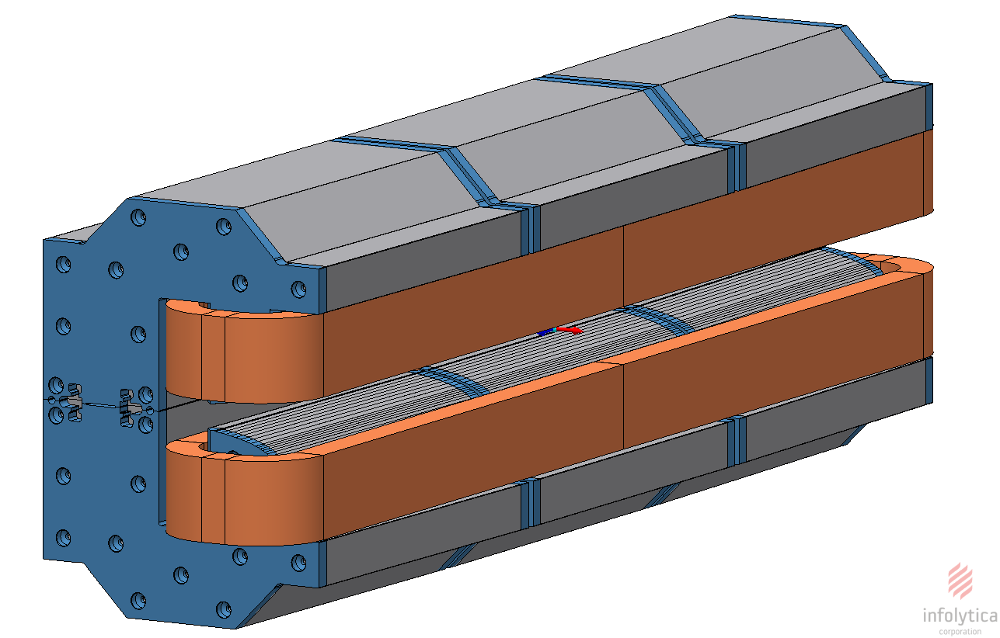
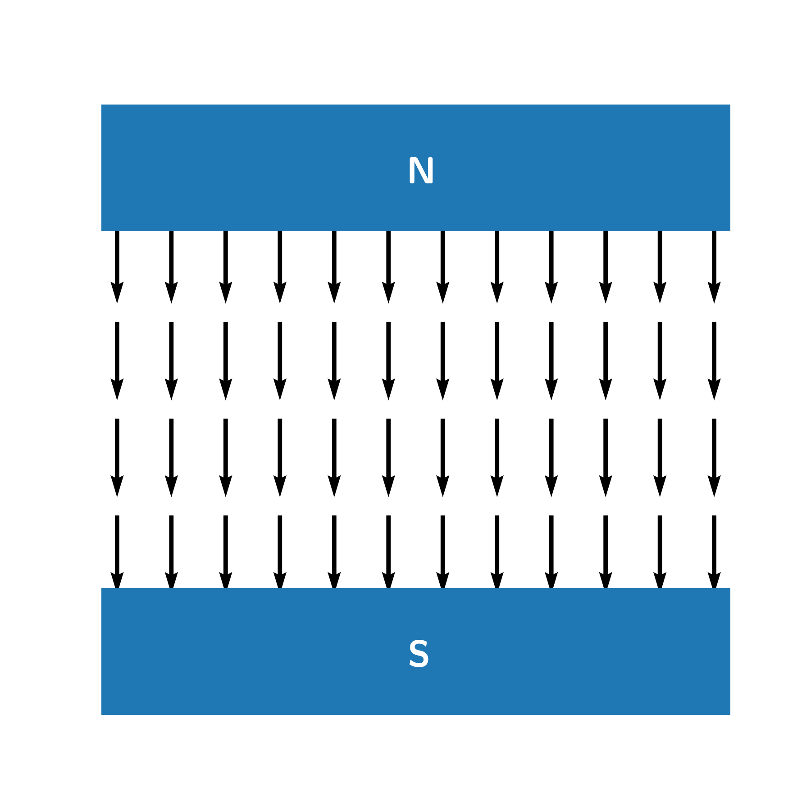
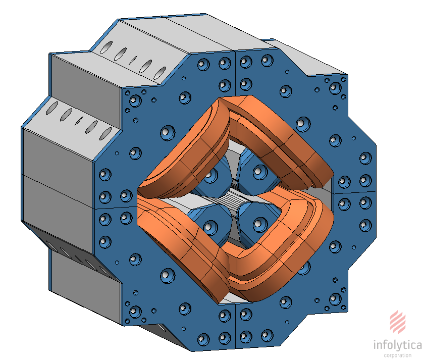
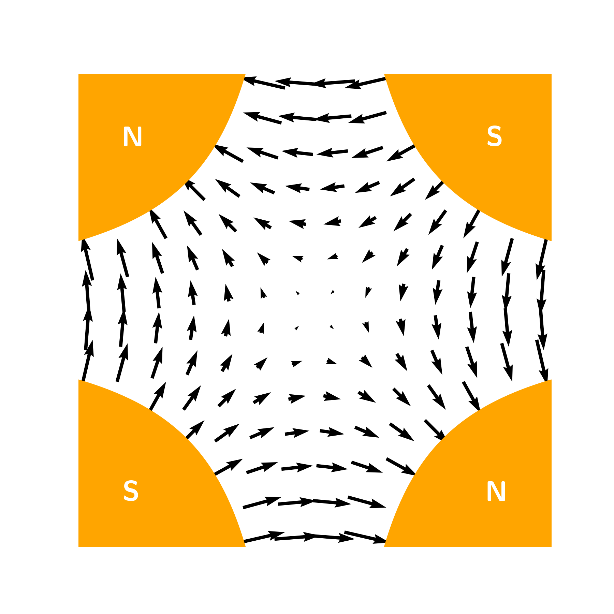
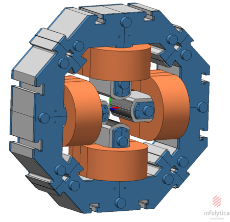
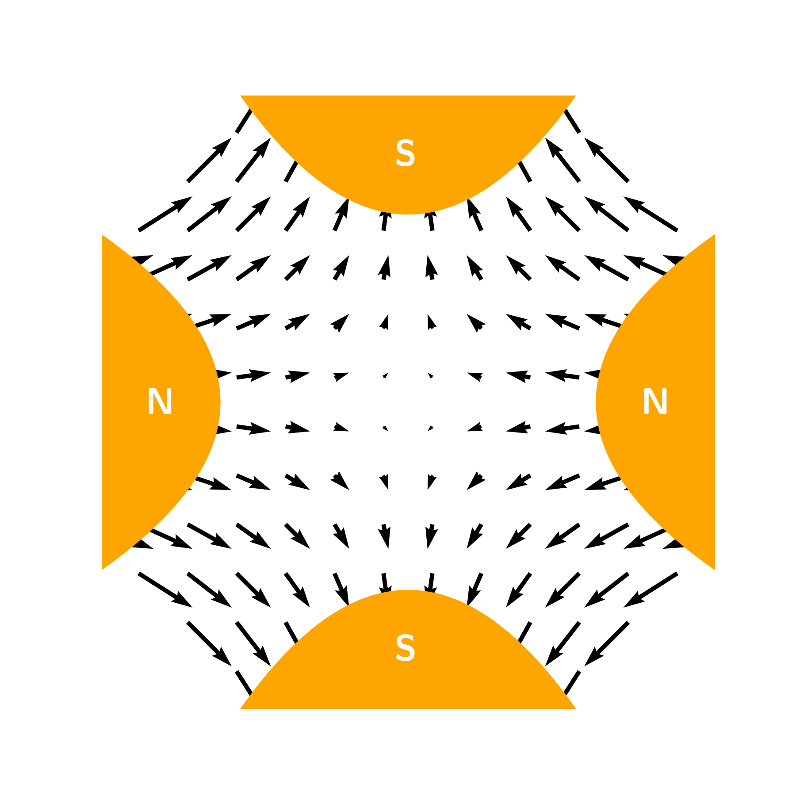
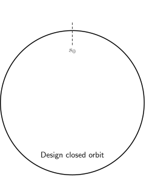
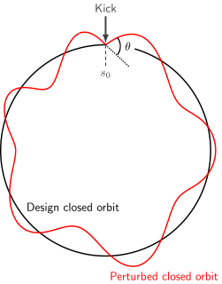
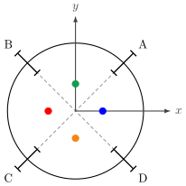
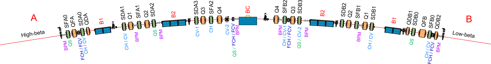

Alternative Beam-Based Alignment techniques for the SIRIUS Storage Ring
Masters Qualification Exam
Vitor Davi de Souza
Prof. Dr. Tulio Costa Rizuti da Rocha
May 15, 2026
Contents
Introduction
SIRIUS
SIRIUS is the Brazilian 4th-generation synchrotron light source, operated by the Brazilian Synchrotron Light Laboratory (LNLS) at the Brazilian Center for Research in Energy and Materials (CNPEM) in Campinas, São Paulo.
| SIRIUS Storage Ring Parameters | ||
|---|---|---|
| Energy | 3 GeV | |
| Emittance (hor.) | 250 pm.rad | |
| Operation mode | Top-up | |
| Parameter | Currently | Phase II |
| Beam current | 200 mA | 350 mA |
| Lifetime | ≈ 8 h | >10 h |

Synchrotron Light Sources: Storage Rings
System
Motivation
- The SIRIUS Storage Ring needs sub-micrometer orbit stability to maintain its performance
- The orbit stability depends on the precision and accuracy of the Beam Position Monitors (BPM)
- The BPMs have high precision (nanometer-level) but low accuracy
- So we calibrate the BPMs using the Beam-Based Alignment (BBA) procedure
The Problem
The current BBA procedure is very time-consuming (6‐8 hours)
Objectives
- Study and validate faster Beam-Based Alignment techniques for the SIRIUS Storage Ring
Bibliographical Review
- Standard BBA
- Parallel BBA
- Others
Simulations
Test BBA methods with the SIRIUS Storage Ring model
Experiments
Implement and validate alternative BBA methods
Theoretical Background
Coordinate System
We adopt a curvilinear coordinate system that follows a design orbit $\vec{r}_0(s)$ (the Frenet-Serret frame)
- $\hat{s}(s) = \dfrac{d}{ds}\vec{r}_0(s)$
- $\hat{x}(s) = -\rho(s)\dfrac{d}{ds}\hat{s}(s)$
- $\hat{y}(s) = \hat{s}(s) \times \hat{x}(s)$
For high energy particles ($v \rightarrow c$), their state is described in terms of small deviations from the design orbit $$\mathbf{x} = (x, x', y, y')^T$$
Magnetic Fields
The transverse magnetic fields are also described in the Frenet-Serret frame
We normalize the field coefficients by the magnetic rigidity $(ec/E_0)$, defining the magnetic lattice functions

$$\Biggl\{ \begin{array}{l} B_x = 0 \\ B_y = B_0 \end{array} \Biggr.$$
$G(s) \equiv \dfrac{ec}{E_0}B_0(s) = \dfrac{1}{\rho(s)}$
(Curvature function)

$$\Biggl\{ \begin{array}{l} B_x = B_1 y \\ B_y = B_1 x \end{array} \Biggr.$$
$K(s) \equiv \dfrac{ec}{E_0}B_1(s)$
(Focusing function)

$$\Biggl\{ \begin{array}{l} B_x = A_1 x\\ B_y = -A_1 y \end{array} \Biggr.$$
$K_S(s) \equiv \dfrac{ec}{E_0}A_1(s)$
(Skew quad. strength)
Transverse Dynamics
In the linear approximation, the equations of motion are
$$\Biggl\{ \begin{array}{l} x'' = -\left(K + G^2\right)x + G\delta + K_S y \\ y'' = + K y + K_S x \end{array} \Biggr.$$
where $\delta = \frac{p - p_0}{p_0} \approx \frac{E - E_0}{E_0}$
The solutions for $x$ and $y$ can be expressed with a matrix formalism $$\mathbf{x}(s_1) = M_{s_1 \leftarrow s_0}\, \mathbf{x}(s_0)$$
Drift
$ \begin{pmatrix} x \\ x' \end{pmatrix}_{\!\!s_1} = \begin{pmatrix} 1 & L \\ 0 & 1 \end{pmatrix} \begin{pmatrix} x \\ x' \end{pmatrix}_{\!\!s_0} $
Quadrupole
$ \begin{pmatrix} x \\ x' \end{pmatrix}_{\!\!s_1} = \begin{pmatrix} 1 & 0 \\ -KL & 1 \end{pmatrix} \begin{pmatrix} x \\ x' \end{pmatrix}_{\!\!s_0} $
Corrector
$ \begin{pmatrix} x \\ x' \end{pmatrix}_{\!\!s_1} = \begin{pmatrix} 1 & 0 \\ 0 & 1 \end{pmatrix} \begin{pmatrix} x \\ x' \end{pmatrix}_{\!\!s_0} + \begin{pmatrix} 0 \\ \theta \end{pmatrix} $
Closed Orbit
The passage through all elements of the accelerator is described by the one-turn matrix $$M = M_{(s_0 + L) \leftarrow s_0} = M_{L \leftarrow s_{N}} \cdots \cdot M_{s_2 \leftarrow s_1} \cdot M_{s_1 \leftarrow s_0}$$
The closed orbit is the fixed point of the one-turn matrix $$\mathbf{x}^*(s) = M \mathbf{x}^*(s)$$
We often call closed orbit the $x$ and $y$ components of $\mathbf{x}^*(s)$ $$\vec{u} = \{x^*_{s_0}, x^*_{s_1}, \dots, x^*_{s_{N}}, y^*_{s_0}, y^*_{s_1}, \dots, y^*_{s_{N}}\}$$
In an ideal accelerator, the closed orbit is the design orbit

Orbit Distortion
However, dipolar kicks disturb the closed orbit $$\frac{ec}{E_0}\Delta B = \Delta x' = \theta \quad \Rightarrow \quad \mathbf{x}^*(s_0) = M \mathbf{x}^*(s_0) + \begin{pmatrix} 0 \\ \theta \end{pmatrix} $$
The disturbance is propagated and particles now follow the perturbed closed orbit
The main sources of orbit distortion are:
- Field imperfections
- Misalignments
- Corrector magnets

Orbit Correction
For the accelerator to perform as designed, we need the closed orbit the closest to the design orbit
→To do this, we need to observe and correct the orbit
- BPMs measure the orbit and the orbit distortion ($\Delta\vec{u}$)
- Corrector magnets kick the beam ($\vec{\theta}$)
- The Orbit Response Matrix ($\mathbf{M}$) describes how kicks affect the orbit
$$\Delta\vec{u} = \mathbf{M}\Delta\vec{\theta}$$
Then, to correct the orbit, we minimize $$\left|\Delta\vec{u} - \mathbf{M}\Delta\vec{\theta}\right|^2$$
→ Which provides the necessary kicks to correct the orbit $$\Delta\vec{\theta} = - \mathbf{M}^\dagger\Delta\vec{u}$$
Orbit Feedback-System: Beam Position Monitors



• At SIRIUS: 160 BPMs
Two pairs of antennas that read the transverse beam position
$$x \propto \dfrac{(A + D) - (B + C)}{A + B + C + D}$$ $$y \propto \dfrac{(A + B) - (C + D)}{A + B + C + D}$$
$$x \propto \dfrac{{\color{blue}(A + D)} - \color{red}{(B + C)}}{A + B + C + D}$$ $$y \propto \dfrac{{\color{green}(A + B)} - {\color{darkorange}(C + D)}}{A + B + C + D}$$
→ Sub-micron resolution
Orbit Feedback-System: Correctors

At SIRIUS:
- 120 CH (slow horizontal correctors)
- 160 CV (slow vertical correctors)
- 80 FCH (fast horizontal correctors)
- 80 FCV (fast vertical correctors)

Orbit Feedback System: SOFB and FOFB
SOFB
- Slow Orbit FeedBack
- @ 1 Hz
- 160 BPMs
- 120 CH + 160 CV
- Compensates slow drifts
- Thermal effects
- Ground motion
- Residual misalignments
FOFB
- Fast Orbit FeedBack
- @ 48 kHz
- 80 BPMs
- 80 FCH + 80 FCV
- Compensates disturbances from
0.1 Hz to 1 kHz
SOFB downloads kicks (4% @ 10 Hz) from FOFB to avoid the saturation of the fast correctors
Orbit Feedback System: the accuracy problem
The electric center of BPMs does not necessarily match the design orbit, and general misalignments also make the BPMs inaccurate
→ To solve this we use the beam as a probe to calibrate the BPMs
(Beam-Based Alignment techniques)

Beam-Based Alignment
The BBA Principle
• The beam itself is used as a surveying tool to determine the offset between a BPM's electric center and the magnetic center of a magnet
• Quadrupoles are the most suitable elements for this purpose since their strength, the beam position and the orbit are linearly related: $\Delta x'= -KL\, x$
Standard BBA
The standard BBA method emerged in the 80s‐90s with seminal works
- R. Schmidt, "Misalignments from K-modulation" (CERN SL/93-19, 1993)
- P. Röjsel, "A Beam Position Measurement System Using Quadrupole Magnets Magnetic Centra as the Position Reference" (NIM, A 343, 1994)
- Barnett et al., "Dynamic Beam Based Alignment" (AIP 333, 1995)
The method empirically applies the BBA principle by modulating the strength of quadrupoles and scanning the orbit on the BPMs to find the offsets
→ In the SIRIUS Storage Ring, the method was studied and implemented in 2019–2020 (commissioning)
Standard BBA
The standard BBA procedure consists of:
- → Scan the beam position on a BPM: $r_i$ = $x_i$ or $y_i$
- → For each $r_i$, vary the quadrupole strength: $K^\pm = K_0 \pm \Delta K$
- → For each $K^\pm$, collect the orbit on all BPMs: $\vec{u}^\pm_i$
- → Calculate the orbit distortion: $\Delta \vec{u}_i$
- → Minimize $\left|\Delta u - (ar + b)\right|^2$ (linear fit) or $\left|(\Delta u)^2 - (ar^2 + br + c)\right|$ (quadratic fit)
- → Obtain the offsets: $r_\text{offset} = \left\langle\dfrac{-b}{a}\right\rangle$ or $r_\text{offset} = \left(\dfrac{-b}{2a}\right)$
Standard BBA
At SIRIUS:
- 160 BPMs
- 90 normal quadrupoles and 70 skew quadrupoles
- orbit shifts on both planes ($x$, $y$) simultaneously
- 9 scan points per BPM (range: ±100μm)
- approximately 2‐3 min per BPM
- 6‐8 hours for a full BBA procedure
Standard BBA
Typical standard BBA results at SIRIUS for a single BPM

Parallel BBA
The Parallel Beam-Based Alignment (PBBA) was proposed by Xiaobiao Huang in 2022

Since then, it has been simulated and experimented on accelerators such as
- LCLS-II (USA, SLAC, 2022)
- SPEAR3 (USA, SLAC, 2022)
- FCC-ee (Switzerland, CERN, 2023/2024)
- KARA (Germany, KIT, 2024/2025)
- NSLS-II (USA, BNL, 2024)
Parallel BBA
• The central idea is to speedup the BBA execution time by calibrating many BPMs simultaneously
• For that, BPM-Quadrupole pairs are separated into groups
• For each group, the strength of the quadrupoles are modulated at once, producing the Induced Orbit Shift
• Minimizing the IOS therefore means the beam is centered at the magnetic center of the modulated quadrupoles
• The readings of the BPMs of the group when the IOS is minimized yields the offsets directly
Parallel BBA
The Parallel BBA procedure consists of:
- $\rightarrow$ Separate all BPM-Quad pairs into groups
- $\rightarrow$ Define $\vec{K}^+$ and $\vec{K}^-$ for each group
- $\rightarrow$ Get the IOS Response Matrix $\mathbf{R}$ for each group
- $\rightarrow$ For each group, do:
- $\qquad\rightarrow$ Measure the IOS: $\vec{\xi} = \vec{u}(\vec{\theta}, K^+) - \vec{u}(\vec{\theta}, K^-)$
- $\qquad\qquad\rightarrow$ Compute the delta kicks ($\Delta\vec{\theta} = -\mathbf{R}^{-1}\vec{\xi})$ and apply ($\vec{\theta} = \vec{\theta} + \Delta\vec{\theta}$)
- $\qquad\rightarrow$ Read the offsets of the BPMs of the group from $\vec{u}(\vec{\theta}, \vec{K}_0)$
Preliminary Results
Parallel BBA: Simulations
→ First steps: divide BPM-Quad pairs into groups
 Q4, QDB2, QDP2, QS @ (M2, C3)
Q1, QS @ (C1, C3)
QS, Q1 @ (C1, C4)
QS, QDB2, QDP2 @ (M1, C2)
Q4, QDB2, QDP2, QS @ (M2, C3)
Q1, QS @ (C1, C3)
QS, Q1 @ (C1, C4)
QS, QDB2, QDP2 @ (M1, C2)
Parallel BBA: Simulations
→ Analyze the impact of measuring the IOS
Tunes and coupling variation during IOS measurement

Parallel BBA: Simulations
→ Simulate a PBBA run on the SIRIUS Storage Ring model
PBBA: Group 0 (Q4, QDB2, QDP2, QS @ [M2, C3])

Parallel BBA: Experiments
- Oct 13, 2025 — First experiments (Groups 0 & 1 and a group of selected BPMs)
- Dec 8, 2025 — First full PBBA runs
- Jan 5, 2026 — Parallel BBA vs Standard BBA
- Jan 12 and Feb 9, 2026 — Group rearrangement and convergence analysis
Parallel BBA: Experiments
• Oct 13, 2025
PBBA and Standard BBA for a group of 4 selected BPMs

PBBA for the "default" group 0

• The Standard BBA runs for the group of 4 selected BPMs took ∼8 minutes
(≈ 2 min/BPM)
• Each PBBA run for both groups took ∼1 minute → does not scale linearly with
the number of BPMs
• For the group of 4 selected BPMs, the results between the Standard BBA and PBBA
differ by ±2μm
• For the "default" group 0: the results of each PBBA run differ by ±6μm
Parallel BBA: Experiments
• Dec 8, 2025: Full PBBA (all "default" groups)

• Each full PBBA run took ≈ 4 min (1 min/group)
• For all groups, the differences between each PBBA run are smaller than ±8μm
Parallel BBA: Experiments
• Jan 5, 2026: Full PBBA before and after a full Standard BBA


• The differences between the results of Standard BBA and PBBA are smaller than
±30μm
with $\sigma_x$ = ±3.46μm and $\sigma_y$ = ±6.78μm
Parallel BBA: Experiments
• Jan 12 and Feb 9, 2026


• For all group configurations, convergence is achieved in 3‐4
iterations
→ which reduces the run execution time by 33%‐50%
• The configuration of 8 groups is the most stable
• For a single BPM, the differences between the Standard BBA and PBBA runs are:
Groups 4x40: ($x$) ±6μm and ($y$) ±7μm
Groups 8x20: ($x$) ±2.5μm and ($y$) ±4μm
Groups 16x10: ($x$) ±5μm and ($y$) ±7μm
• The Standard BBA results from the linear and quadratic fits differ by ($x$)
±0.5μm and ($y$) ±3μm
Parallel BBA: Partial Conclusion
So far, PBBA has shown:
- High speed — the execution time is 45‐90 times faster (6 hours to 4‐8 minutes)
- Accuracy — comparisons with Standard BBA show differences of a few microns
- Repeatability — PBBA runs under the same configuration differ by a few microns
Closing
So far, the following activities have been developed:
- Study of accelerator physics, beam dynamics, beam-based alignment
- Implementation and experiments of Parallel BBA on the SIRIUS Storage Ring
- Courses: FI001, FI195, FI189 (and FI008 to be concluded this semester)
Next Steps
- A contribution to be presented at the IPAC'26 (International Particle Accelerator Conference)
- Continue PBBA experiments to improve and polish the implementation
- Study the FBBA-AC method in greater depth
- Implement and validate FBBA-AC at SIRIUS
- Compare the overall performance of the different methods
- Survey of additional methods